La Motha
Xmas Gravel Ride
Domenica 13 dicembre


Targhetta da bici 150×100 mm con 3 mm di abbondanza, ingrandita. La bici con il regalo sul portapacchi, il nome dell'evento, il cartellino vuoto dove scrivere il proprio nome, la fascia di tessere in basso. Gli angoli in alto sono liberi per i fori delle fascette. PDF: stampa/Targhetta-GravelRide-15x10.pdf.